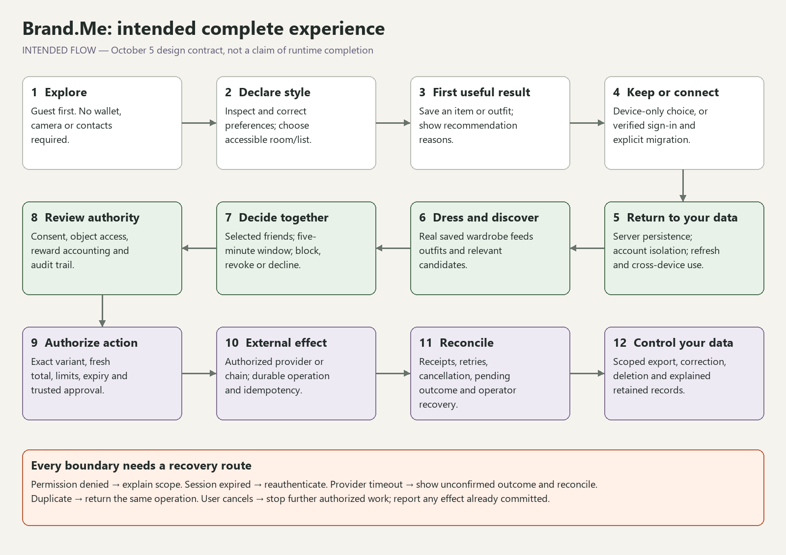
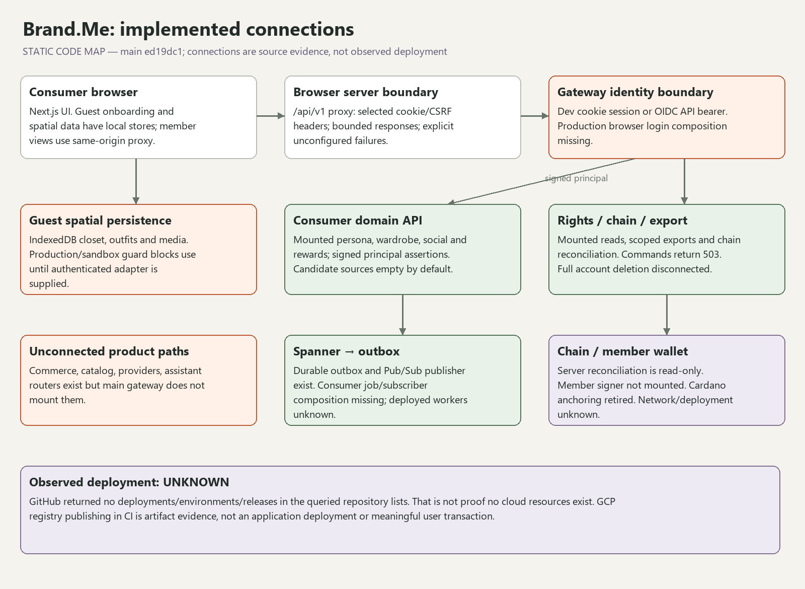
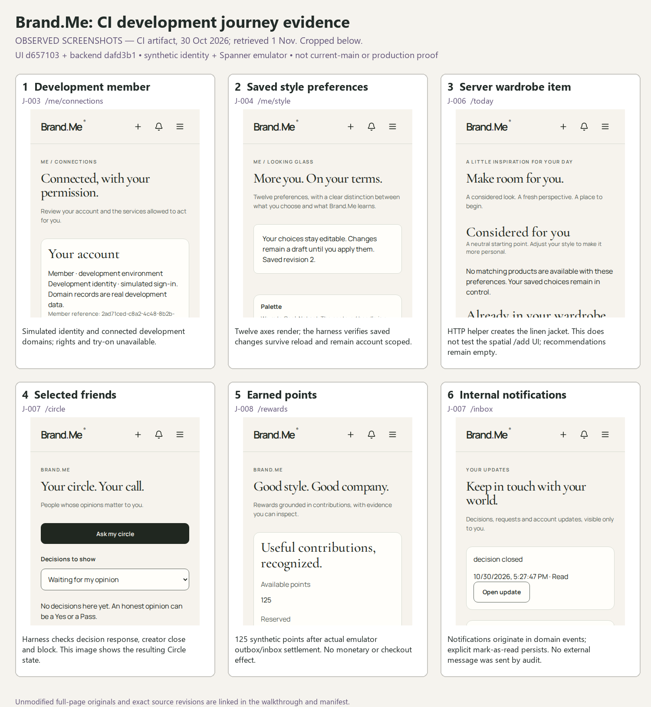
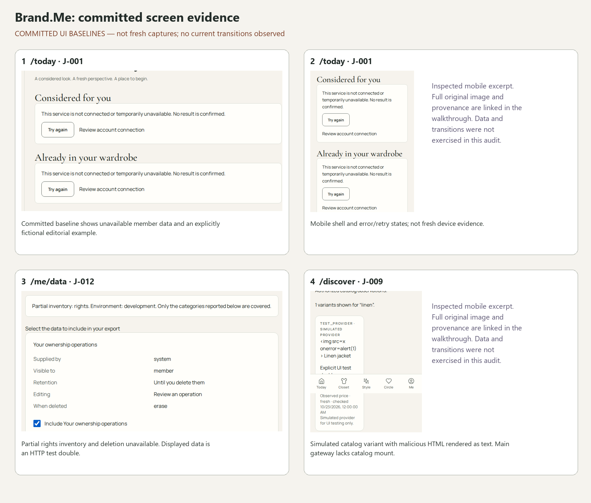
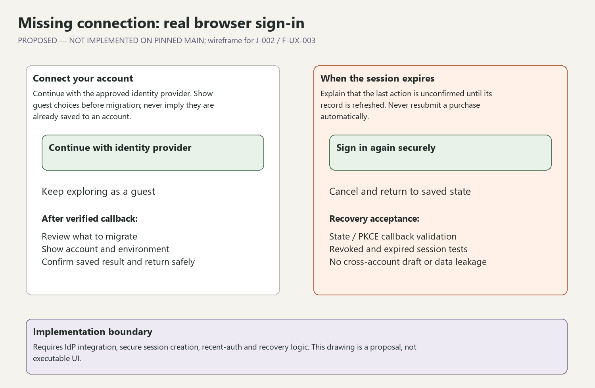

Main revision ed19dc151d103b108cf972e6d37971c55d5dcf60 · Audit date 2026-11-01
Audit index · Detailed journey trace · Image provenance
INTENDED FLOW. Derived from the dated product contract. It does not assert delivered behavior.

STATIC CODE MAP. Solid arrows describe source wiring, not runtime observations; red gaps are missing connections.

OBSERVED SCREENSHOTS from the October 30 CI job, not newly captured by this audit. UI d657103ee21674ef14d6182572a78d75d0241b29 used backend dafd3b169da777ec3e3a7fc2c3f0cab573358e2b. Real HTTP and Spanner emulator; synthetic development identity. A custom dev harness mounts routers and directly dispatches outbox events to rewards; canonical worker composition is unverified. A custom dev harness mounts routers and directly dispatches outbox events to rewards; canonical worker composition is unverified. The wardrobe item was inserted through an HTTP helper, not the spatial Add UI. The separate shell job failed its visual baseline size comparison.

COMMITTED UI BASELINES. Original images are linked below, separate from annotations. Catalog and privacy data are test doubles. No fresh transition was captured.

PROPOSED — NOT IMPLEMENTED. A consequential missing browser journey on main.

Original capture dates and runtime application SHAs are unknown. File-change commits are recorded separately in the manifest.